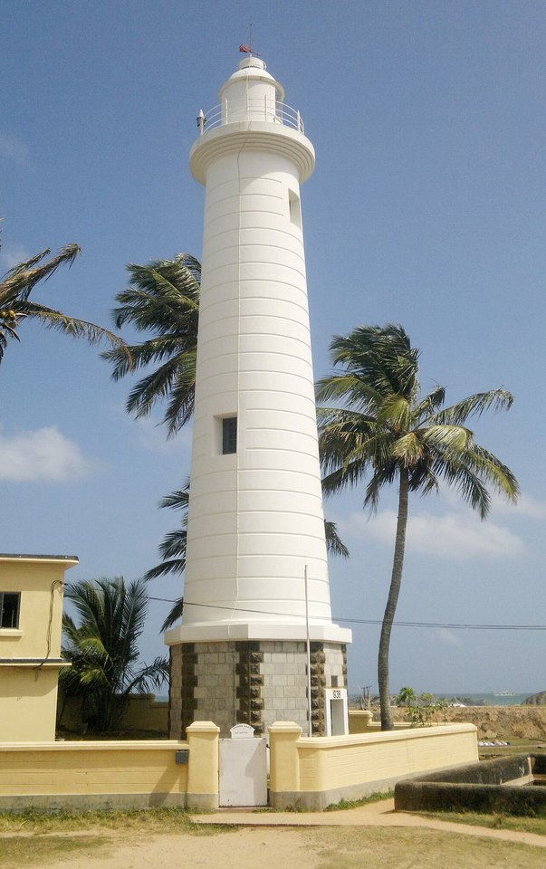
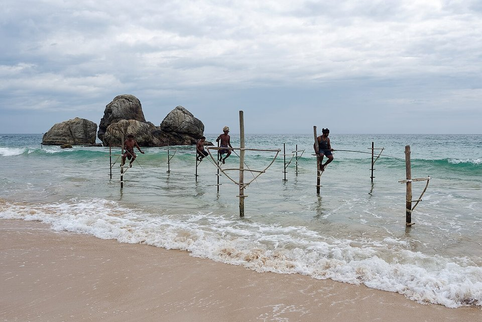
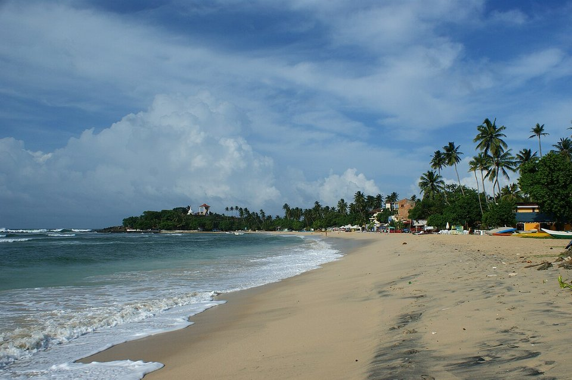

About Galle Dutch Fort
Jutting into the Indian Ocean on a rocky promontory on Sri Lanka's southwest coast, the Galle Dutch Fort is a living, breathing architectural marvel. First fortified by the Portuguese in 1588 following their initial landing in 1505, it was extensively rebuilt and expanded by the Dutch East India Company (VOC) starting in 1640. Enclosed by massive granite and coral-stone sea ramparts, the 36-hectare fortified city survived the catastrophic 2004 Indian Ocean tsunami virtually unscathed. Today, Galle Fort is an enchanting UNESCO World Heritage site where centuries-old Dutch colonial residences with red-tiled roofs, pedimented gables, and wide verandahs have been transformed into boutique hotels, artisan jewelry stores, spice shops, and art galleries. Visitors wander along tranquil cobblestone lanes like Church Street and Pedlar Street, visit the 1755 Dutch Reformed Church (Groote Kerk) with its gravestone floor, and gather at Flag Rock and the iconic white 1939 Galle Lighthouse for breathtaking sunset panoramas.
Historical & Cultural Background
Built by Portuguese (1588); extensively fortified into a 14-bastion fortress by Dutch (1640 onwards); taken over by British in 1796; inscribed as a UNESCO World Heritage site in 1988.
Natural & Geographical Characteristics
Rocky coastal peninsula jutting into the Indian Ocean, surrounded on three sides by the sea.
What Makes It Special
14 coral and granite bastions, Dutch Reformed Church, 1939 white lighthouse, Old Dutch Hospital, and historic rampart walkway.
Why You Shouldn't Miss This Place
- Stroll along the historic sea ramparts at sunset while watching local cliff jumpers at Flag Rock
- Photograph the iconic white Galle Lighthouse framed by palm trees and crashing ocean waves
- Wander through 400 years of living Dutch and Portuguese colonial architecture
- Explore chic designer boutiques, gem jewelers, and gourmet gelato cafes on cobblestone lanes
Things to Do & Available Experiences
Insider Travel Tips
Photo Gallery & Visual Impressions
High-resolution imagery captured by travel photographers. Click to open full lightbox preview.





Nearby in Galle District

Unawatuna Beach & Coral Bay
Half Day to Full Day
Jungle Beach & Rumassala Peace Pagoda
2 - 4 Hours